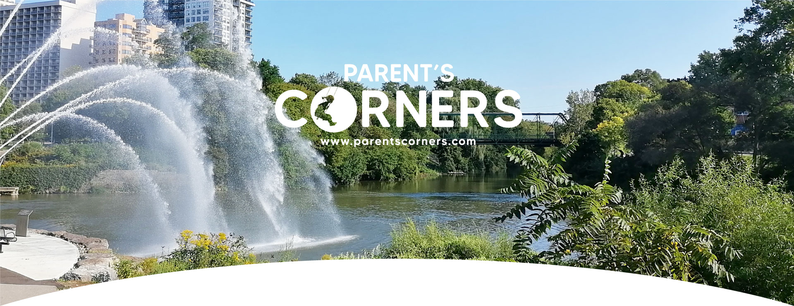
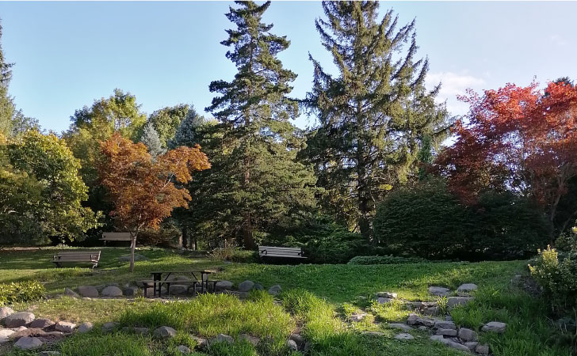
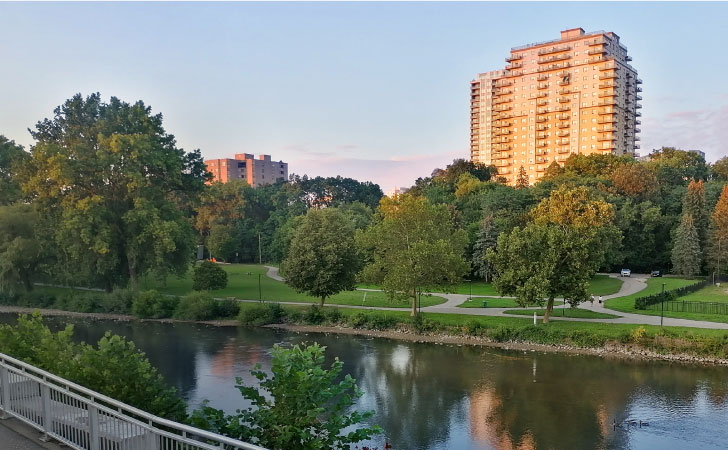
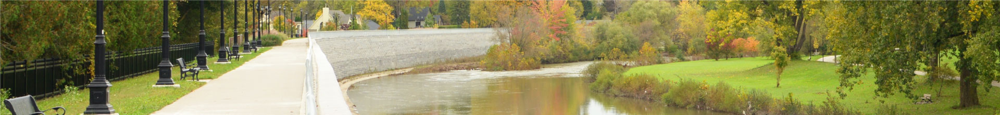

New city, new parks, same parents
New to London and looking for special places to share your evenings with your children? Welcome to the city of parks!
When you are a newcomer to the city you have a mind full of questions, and when you are a father even more. One of them is what can I do with my children in this unknown city? This site is dedicated to showcasing the beautiful parks that exist in the city of London, Ontario. These unique spaces full of life will be the opportunity to enjoy happy moments with your children while you get to know the place. Enjoy and become your family's tour guide.

SPRINGBANK PARK
SOUTHWEST
Great spaces, great games,
great moments
VICTORIA PARK
DOWNTOWN
History, culture
and nature

HARRIS PARK
DOWNTOWN
Nature with
generous spacious
